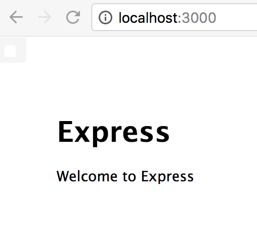

node.js express 创建篇
环境：基于已经安装了 node.js 以及 express 的电脑上操作~
使用 express 创建项目
1.使用命令创建项目：
express -e myservice
得到结果：
warning: option `--ejs' has been renamed to `--view=ejs'
create : myservice
create : myservice/package.json
create : myservice/app.js
create : myservice/public
create : myservice/routes
create : myservice/routes/index.js
create : myservice/routes/users.js
create : myservice/views
create : myservice/views/index.ejs
create : myservice/views/error.ejs
create : myservice/bin
create : myservice/bin/www
create : myservice/public/javascripts
create : myservice/public/images
create : myservice/public/stylesheets
create : myservice/public/stylesheets/style.css
install dependencies:
$ cd myservice && npm install
run the app:
$ DEBUG=myservice:* npm start
2.使用命令到该目录下：
cd myservice
3.使用命令查看该目录下：
ls
得到结果：
app.js bin package.json
public routes views
4.使用命令查看 package.json 文件：
通过 package.json 文件，我们可以看到依赖了哪些类库、框架。
cat package.json
得到结果：
{
"name": "myservice",
"version": "0.0.0",
"private": true,
"scripts": {
"start": "node ./bin/www"
},
"dependencies": {
"body-parser": "~1.17.1",
"cookie-parser": "~1.4.3",
"debug": "~2.6.3",
"ejs": "~2.5.6",
"express": "~4.15.2",
"morgan": "~1.8.1",
"serve-favicon": "~2.4.2"
}
}
5.使用命令:
通过这个命令安装、下载相关的依赖。
npm install
得到结果：
npm notice created a lockfile as package-lock.json. You should commit this file.
added 60 packages from 49 contributors in 2.432s
6.再次使用命令查看该目录下：
ls
得到结果：
app.js bin package.json
public routes views
node_modules package-lock.json
7.使用命令启动项目：
npm start
得到结果：
> myservice@0.0.0 start /Users/muzico/Documents/Project/node_js/myservice
> node ./bin/www
默认的端口是3000，
相关配置在 ./bin/www
通过浏览器打开网址：
localhost:3000

OK，项目创建成功。
8.每次修改页面都需要重新启动服务器，
通过命令：
sudo npm install -g supervisor
得到结果：
/usr/local/bin/node-supervisor -> /usr/local/lib/node_modules/supervisor/lib/cli-wrapper.js
/usr/local/bin/supervisor -> /usr/local/lib/node_modules/supervisor/lib/cli-wrapper.js
+ supervisor@0.12.0
added 1 package from 28 contributors in 1.251s
9.命令，通过 supervisor 启动项目：
supervisor bin/www
得到结果:
Running node-supervisor with
program 'bin/www'
--watch '.'
--extensions 'node,js'
--exec 'node'
Starting child process with 'node bin/www'
Watching directory '/Users/muzico/Documents/Project/node_js/myservice' for changes.
Press rs for restarting the process.